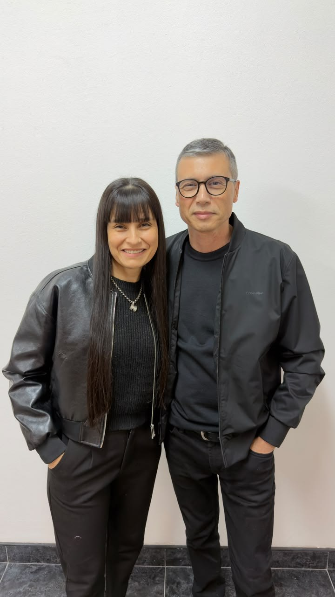
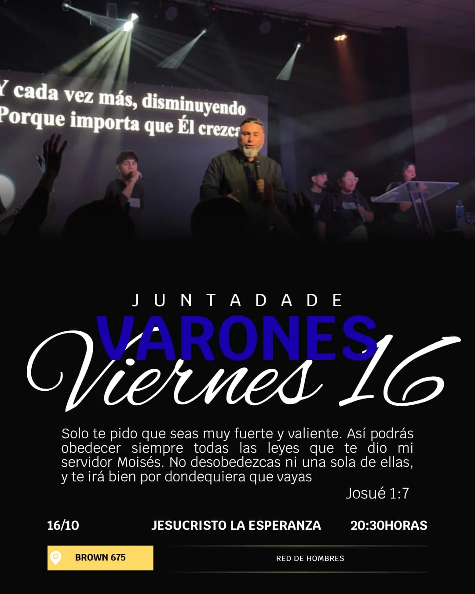
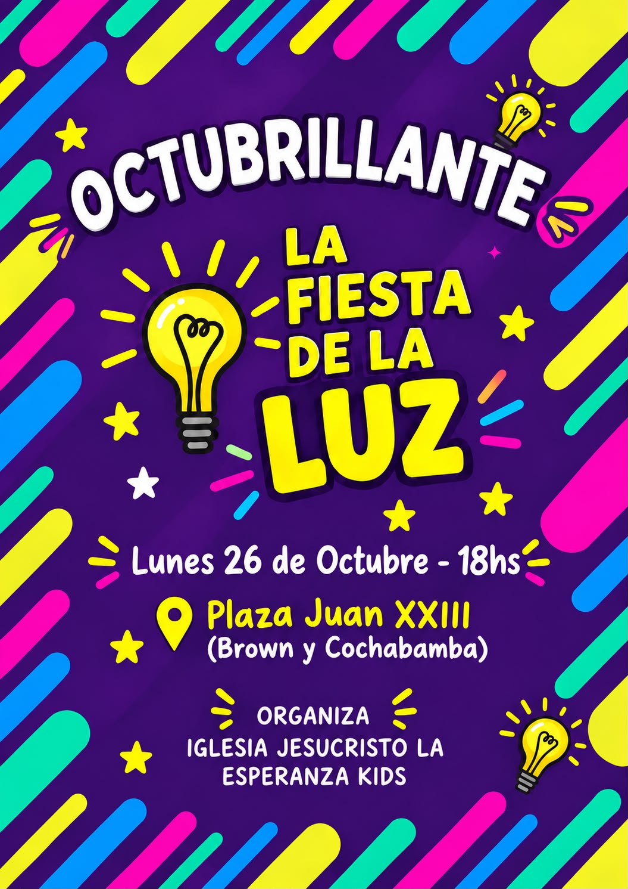

“Aunque ande en valle de sombra de muerte, no temeré mal alguno; porque tú estarás conmigo: tu vara y tu cayado me infundirán aliento.”
Iglesia Jesucristo La Esperanza
Hay esperanza.
Y tiene nombre:
Jesucristo.
No importa lo que estés viviendo hoy, hay un lugar para vos. Vení como sos, encontrá una familia y descubrí la paz que solo Él puede dar.
Brown 675, San Nicolás de los Arroyos

Familia pastoral
Una iglesia que
acompaña.
Acompañan a nuestra congregación con cercanía, compromiso y cuidado por cada persona.
Contactar a la iglesiaUn momento con la Palabra
Un versículo
para hoy.
Una palabra para acompañar tu día.
Más que una iglesia, una familia que camina con vos.
Encontrá dónde conectarQuiénes somos
Una casa,
Una Iglesia,
Una familia.
Queremos que encuentres un lugar donde acercarte a Dios, sentirte escuchado y vivir la fe junto a otros.
Somos una iglesia, pero también una familia. Si estás buscando a Dios, necesitás que alguien te escuche o simplemente querés conocer gente nueva, podés acercarte tal como sos.
Nos une el amor de Jesús y las ganas de acompañarnos en cada etapa. Queremos caminar con vos, compartir lo que aprendemos y crecer juntos, con tiempo y sin que tengas que tener todo resuelto.
Vení a conocernosVisión y misión
Nuestra razón de ser.
Visión
“Por tanto, id, y haced discípulos a todas las naciones, bautizándolos en el nombre del Padre, y del Hijo, y del Espíritu Santo; enseñándoles que guarden todas las cosas que os he mandado; y he aquí yo estoy con vosotros todos los días, hasta el fin del mundo. Amén.”
Mateo 28:19–20
Misión
Ganar, consolidar, discipular y enviar.
- 01
Ganar
Compartir el Evangelio de Jesucristo para alcanzar nuevas personas.
- 02
Consolidar
Acompañarlas en células evangelísticas, en un ambiente de paz y amor.
- 03
Discipular
Formarlas con el ejemplo y la enseñanza fiel de la Palabra, en la Escuela de Vida y los Institutos Bíblicos Vida.
- 04
Enviar
Preparar líderes para que enseñen a otros.
En San Nicolás, Argentina y el mundo.
Agenda de la iglesia
Celebramos y
crecemos juntos.
Anuncios, encuentros y momentos para compartir como familia. El aniversario de la iglesia es nuestro próximo gran festejo.
Jesucristo
La Esperanza Aniversario 30 de octubre · 1 de noviembre
La Esperanza Aniversario 30 de octubre · 1 de noviembre
Nuestro próximo gran encuentro
Aniversario de la iglesia
Tres días para celebrar lo que Dios hizo y sigue haciendo en nuestra casa.
Sábado 31 de octubre y domingo 1 de noviembre · 20:00
Brown 675 · San Nicolás de los Arroyos
00días
00horas
00minutos
00segundos
Cuenta regresiva para el comienzo del aniversario.
Consultar por el aniversarioAnuncios
Próximas actividades
Tocá cada afiche para verlo completo.

Lunes 12 de octubre · 16:00
Salida evangelística
Punto de encuentro: Savio y Mitre, esquina Mostaza.

Miércoles 14 de octubre · 20:00
Bautismo
Brown 675 · San Nicolás de los Arroyos.

Viernes 16 de octubre · 20:30
Junta de varones
Brown 675 · Red de Hombres.

Sábado 17 de octubre · 09:00
Persevera y triunfarás
Congreso de mujeres · JLE Pueblo Esther, Rioja 1326. Entrada libre y gratuita.

Viernes 23 de octubre · 18:30
Charla para mujeres
Brown 675 · San Nicolás de los Arroyos.

Lunes 26 de octubre · 18:00
Octubrilante: Fiesta de la Luz
Plaza Juan XXIII · Brown y Cochabamba. Organiza JLE Kids.

6 y 7 de noviembre de 2026
Encuentro
“Un encuentro con Dios transforma todo”. Anotate con tu líder.
27 y 28 de enero de 2027
Campamento para niños
JLE Kids · ¡Te esperamos para vivir juntos algo increíble!

Evento destacado · Jóvenes
Campamento
Activados 2027.
8, 9 y 10 de enero de 2027 · Complejo TAM.
Ver afiche completoLo que creemos
Nuestra fe se basa
en la Palabra de Dios.
Estas convicciones sostienen todo lo que somos y hacemos.
La Biblia
Es la Palabra inspirada de Dios y la autoridad final para la fe y la conducta del creyente.
2 Timoteo 3:16–17Un solo Dios en tres personas
Un solo Dios eterno: Padre, Hijo y Espíritu Santo, iguales en naturaleza y unidos en propósito.
Mateo 28:19 · 2 Corintios 13:14La llenura del Espíritu Santo
Creemos que el Espíritu Santo es un regalo de Dios para cada creyente, que lo capacita para dar testimonio y crecer en la vida espiritual.
Hechos 2:38–39 · Hechos 1:8Jesucristo y la gracia
Jesús murió en la cruz y resucitó. La salvación se recibe por gracia, a través de la fe.
Efesios 2:8–9 · Juan 14:6El bautismo
Es un acto de obediencia y testimonio público de la fe en Cristo.
Mateo 28:19 · Romanos 6:4La Iglesia
Es una familia llamada a congregarse, amarse, servir y crecer en fe y madurez espiritual.
Hebreos 10:24–25El arrebatamiento
Esperamos la resurrección de quienes murieron en Cristo y el arrebatamiento de la Iglesia para estar siempre con el Señor.
1 Tesalonicenses 4:16–17Ministerios
Hay un lugar
para vos.
Cada etapa de la vida tiene un espacio en nuestra familia. Encontrá dónde conectar, crecer y servir.


Niños
Un espacio seguro y lleno de amor donde los más pequeños descubren a Jesús con historias, juegos y enseñanza bíblica adaptada a su edad.
Jóvenes
Jóvenes reales, con preguntas reales, construyendo una fe que resiste. Comunidad, música y enseñanza relevante. Instagram de jóvenes ↗
Intercesión
Nos unimos en oración por las personas, las familias y las necesidades de nuestra comunidad, confiando en que Dios escucha y acompaña.
Alabanza
Un equipo apasionado que prepara cada momento de adoración como una ofrenda genuina.
Instituto
Un espacio para profundizar en la Palabra, aprender y crecer en la fe.
Damas
Un espacio de encuentro, acompañamiento y crecimiento espiritual para mujeres.
Hombres
Un espacio para compartir, crecer en la fe y acompañarnos como varones.
Evangelismo
Compartimos el amor de Jesús en nuestra ciudad y servimos a las personas con esperanza, oración y acciones concretas.
Formación bíblica
Crecer en la fe,
paso a paso.
Hay espacios para aprender la Palabra y vivirla en cada etapa del camino.
Conocé nuestros espacios de estudio
Escuela de Vida
Un espacio para aprender los fundamentos de la fe y llevar el Evangelio a la vida cotidiana.
Viernes · 14:00 y 20:00 Duración: 1 h 30 min
Instituto Bíblico Vida Básico
Formación bíblica para conocer más la Palabra y crecer en el servicio.
Sábados · 14:00 a 19:00
Instituto Bíblico Vida Superior
Un recorrido de profundización bíblica para seguir madurando y prepararse para enseñar.
Martes y jueves · 19:00 a 22:00
Cultos y transmisiones
Conectate con
nuestra comunidad.
Nos reunimos los domingos. Consultá nuestros canales para confirmar si hay una transmisión en vivo; también podés ver mensajes anteriores.
Contacto y visitas
Nos encantaría
conocerte.
No necesitás una razón especial para escribirnos. Te responderemos con gusto.
Visítanos
Brown 675San Nicolás de los Arroyos, Argentina Abrir en Google Maps
Escribinos
iglesiajle33@gmail.comPor ahora, el contacto directo es por correo. No publicamos un número de teléfono hasta tener uno confirmado.